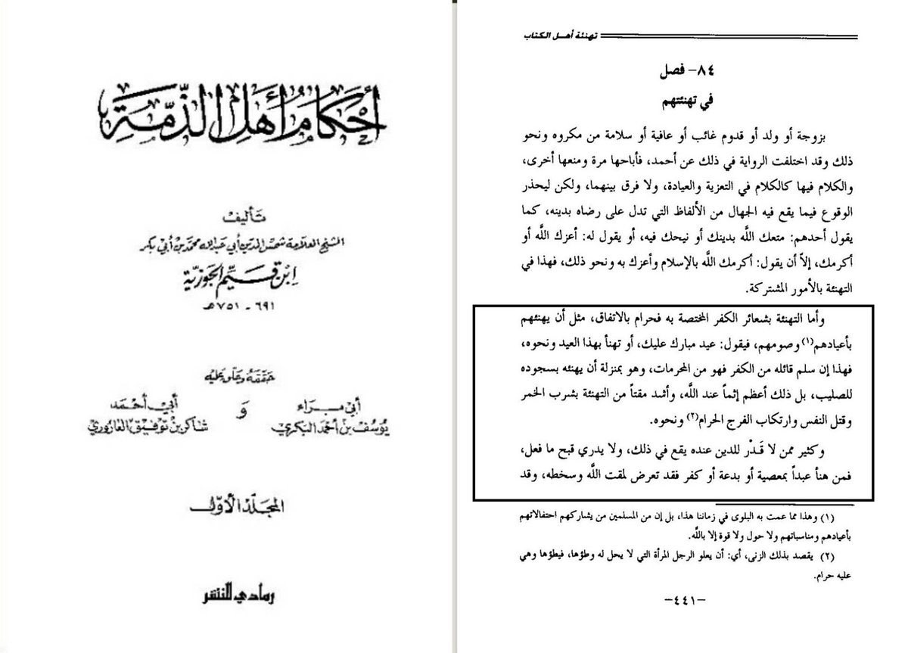
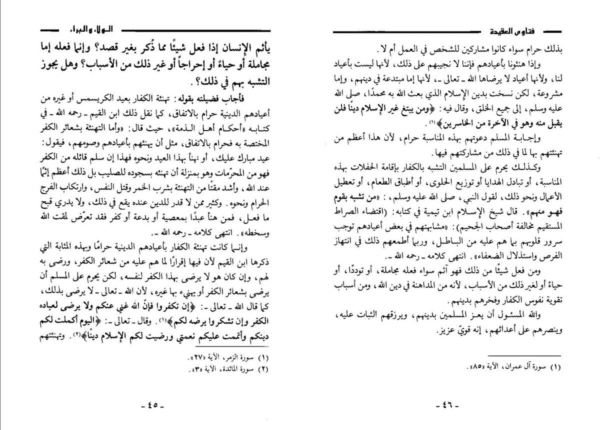

Ruling on celebrating unislamic holidays
Imam Ibn Al Qayyim said:
Congratulating the kùffàrs on the holidàys that belong only to them is harām by Ijma,.

mam Ibn Al Qayyim said:
Congratulating the kùffàrs on the holidàys that belong only to them is harām by Ijma,
Sheikh Ibn uthaymeen's said:
Congratulating the kuffaar on their religious festivals is haraam to the extent described by Ibn al-Qayyim because it
implies that one accepts or approves of their rituals of kufr.

https://youtube.com/shorts/rKiH5VrQ1yY?feature=share
https://youtu.be/T9FNWYv6y_o
https://youtu.be/120oE1k7YaY
https://youtu.be/0lEZ-lyIs50
https://youtu.be/35q1Byh8i_A
https://youtu.be/4s_VtQP5HWc